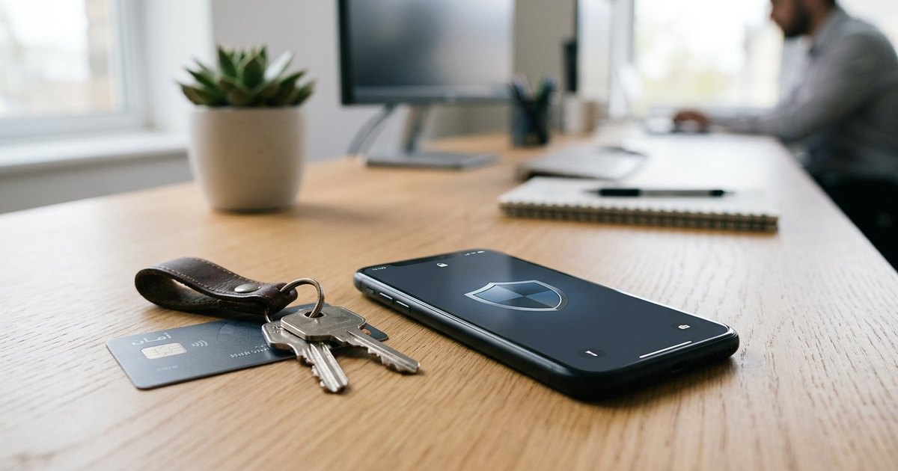
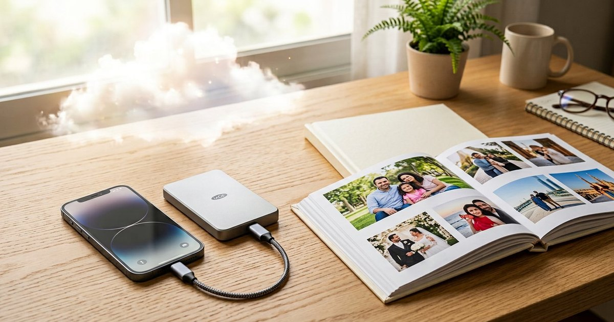

تكنولوجيا
تأمين هاتف أندرويد: إعدادات حماية أساسية في 20 دقيقة
أهم إعدادات أمان أندرويد: قفل شاشة قوي، تحديثات النظام، التحقق بخطوتين، مراجعة أذونات التطبيقات، والعثور على الجهاز عن بُعد.
تقنية مفهومة تساعدك على الاختيار والاستخدام الآمن.

أهم إعدادات أمان أندرويد: قفل شاشة قوي، تحديثات النظام، التحقق بخطوتين، مراجعة أذونات التطبيقات، والعثور على الجهاز عن بُعد.

خطة نسخ احتياطي عملية: قاعدة النسختين، السحابة والقرص الخارجي معًا، نسخة خارج المنزل، جدولة تلقائية، واختبار الاستعادة دوريًا.

خطة عملية لتجهيز بريد الاسترداد ورموز النسخ الاحتياطية والأجهزة الموثوقة وترتيب الحسابات قبل فقد الهاتف أو التعرض للاختراق.

قائمة فحص عملية للهاتف المستعمل تشمل الملكية وقفل التنشيط والتحديثات والبطارية والشاشة والكاميرا والشبكة وإعادة الضبط الآمنة.

تسريع حاسوب بطيء: نسخة احتياطية، برامج بدء التشغيل، مساحة القرص، فحص ضار موثوق، وترقية مدروسة دون منظفات سجل مجهولة.

تقليل بيانات الجوال: معرفة التطبيقات الشرهة، التحديث عبر واي فاي، جودة الفيديو، والخرائط دون اتصال، مع اختلاف أسماء الإعدادات.

فئات تطبيقات أندرويد للنسخ والملفات والملاحظات والقراءة والتصوير، مع مراجعة السعر والصلاحيات في المتجر الرسمي كل مرة.

فحص المتجر قبل الدفع، حماية البطاقة والرموز، تجنب التصيد، والاعتراض بعد عملية مشبوهة مع حفظ الأدلة.

شرح الذكاء الاصطناعي: بيانات وتدريب واستدلال، حدود الأخطاء والخصوصية، وكيف تستخدم الأدوات كمساعد لا كمصدر نهائي.

حماية الحسابات: بريد رئيسي، كلمات مرور فريدة، مدير كلمات، مصادقة قوية، رموز استرداد، والتصرف عند الاختراق.

اختيار هاتف حسب الاستخدام والتحديثات والبطارية والتخزين والكاميرا، مع قائمة فحص قبل الشراء من غير أرقام مثالية للجميع.